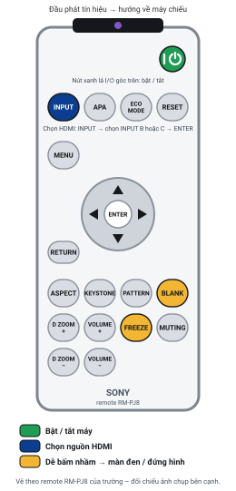

Máy chiếu Sony
Model đang dùng tại trường: [MODEL]. Máy chiếu Sony lớp học thường thuộc dòng VPL (VPL-EX, VPL-DX, VPL-EW, VPL-PHZ…).
Lưu ý
Tên nút, thứ tự menu và ý nghĩa đèn báo dưới đây là phổ biến cho máy chiếu Sony dùng trong lớp học. Model thực tế có thể khác đôi chút – hãy đối chiếu với nhãn in trên remote của phòng. Máy treo trên cao nên mọi thao tác đều làm trên remote; không dùng nút trên thân máy.
3 thao tác hay dùng nhất
- Bật máy: nhấn nút POWER (I/⏻) trên remote 1 lần → đèn ON/STANDBY nhấp nháy xanh → sáng xanh ổn định sau 30–60 giây là sẵn sàng.
- Chọn HDMI: nhấn INPUT → danh sách nguồn hiện ra → dùng ▲▼ chọn cổng HDMI (Sony thường đặt tên là INPUT B hoặc INPUT C) → nhấn ENTER.
- Tắt máy: nhấn POWER → màn hình hỏi POWER OFF? Please press POWER key again → nhấn POWER lần nữa → quạt chạy làm mát 1–2 phút rồi tự ngừng. Không cần làm gì thêm.
Sơ đồ nút thường gặp trên remote

assets/img/.
Ý nghĩa các nút
- POWER (I/⏻)Bật / tắt máy. Tắt cần nhấn 2 lần (lần 2 để xác nhận).
- INPUTMở danh sách nguồn vào (INPUT A, B, C, VIDEO…). Chọn bằng ▲▼ rồi ENTER, hoặc nhấn INPUT nhiều lần.
- MENU / ENTER / RETURNMở menu, xác nhận, quay lại. Các mũi tên ▲▼◀▶ để di chuyển.
- APA"Auto Pixel Alignment" = tự căn hình, chỉ dùng cho cổng máy tính VGA. Với HDMI không cần.
- KEYSTONEChỉnh méo hình thang. Dùng ▲▼ để chỉnh, ENTER để lưu.
- ASPECTĐổi tỉ lệ khung hình: Normal / Full / 4:3 / 16:9 / Zoom. Chọn Normal hoặc Full nếu không rõ.
- PIC MUTE / BLANKDễ bấm nhầm Tạm tắt hình (màn đen). Nhấn lại để có hình.
- FREEZEDễ bấm nhầm Đóng băng hình đang chiếu. Nhấn lại để bỏ.
- D ZOOM + / −Phóng to kỹ thuật số một vùng hình. Nhấn − về mức bình thường hoặc RESET.
- PATTERNHiện lưới thử để căn hình/lấy nét. Nhấn lại để tắt lưới.
- ECO MODEChế độ tiết kiệm đèn (hình tối hơn, quạt êm hơn). Không nên đổi.
- INFOHiện thông tin nguồn, độ phân giải, giờ đèn – hữu ích khi báo IT.
- RESETĐưa mục đang chọn về mặc định. Không nhấn nếu không rõ.
- ID MODE 1/2/3Chọn máy chiếu điều khiển khi phòng có nhiều máy. Nếu remote không ăn, thử ID MODE 1.
Chọn nguồn HDMI
Sony thường đặt tên cổng theo chữ cái (INPUT A/B/C/D) thay vì tên loại cổng; cổng HDMI thường là INPUT B hoặc INPUT C.
- Xem nhãn trên ổ HDMI ở tường / hộp nối trên bàn giảng viên (nếu IT có ghi, ví dụ HDMI – INPUT B). Không có nhãn → thử lần lượt.
- Nhấn INPUT trên remote. Danh sách nguồn hiện ở góc màn hình.
- Dùng ▲▼ chọn dòng INPUT B (hoặc C/D) có chữ HDMI → nhấn ENTER. Hoặc nhấn INPUT nhiều lần đến khi đúng.
- Đợi 3–5 giây. Chưa có hình thì thử dòng HDMI còn lại.
- Vẫn No Input? Xem mục No Signal.
Ý nghĩa đèn báo trạng thái
Máy Sony thường có đèn ON/STANDBY và đèn LAMP/COVER, TEMP/FAN (máy đời mới gộp thành WARNING). Đây là ý nghĩa phổ biến – cần đối chiếu với model thực tế.
| Đèn ON/STANDBY | Đèn LAMP/COVER · TEMP/FAN · WARNING | Ý nghĩa | Việc cần làm |
|---|---|---|---|
| Đỏ sáng ổn định | Tắt | Đang chờ (standby), đã có điện | Nhấn POWER để bật |
| Xanh nhấp nháy | Tắt | Đang khởi động, hoặc đang làm mát sau khi tắt | Đợi 30–90 giây |
| Xanh sáng ổn định | Tắt | Đang hoạt động bình thường | Chọn HDMI, sử dụng |
| Cam sáng (một số model) | Tắt | Chế độ chờ tiết kiệm điện / hẹn giờ | Nhấn POWER hoặc nút bất kỳ |
| Bất kỳ | LAMP/COVER đỏ nhấp nháy | Nắp đèn chưa đóng chặt, bóng đèn lỗi hoặc hết tuổi thọ | Tắt máy, gọi IT, không tự mở máy |
| Bất kỳ | TEMP/FAN đỏ nhấp nháy | Quá nhiệt hoặc quạt lỗi; khe gió bị che; lọc bụi bẩn | Tắt máy, để nguội, gọi IT (không tự kiểm tra khe gió trên máy) |
| Đỏ nhấp nháy | WARNING nhấp nháy | Lỗi hệ thống (số lần nháy = mã lỗi) | Đếm số lần nháy, tắt máy, gọi IT |
| Không sáng | Tắt | Không có điện | Kiểm tra công tắc / cầu dao của phòng – mục 1 |
Thông báo hay gặp trên màn hình
- No Input / No SignalKhông có tín hiệu từ laptop → mục No Signal.
- Not applicable! / Frequency is out of range!Độ phân giải laptop không hỗ trợ → giảm về 1920×1080 hoặc 1280×800 (hướng dẫn).
- High temp.! Lamp off in 1 min.Máy sắp tự tắt vì quá nóng → lưu bài, để máy tự tắt và nguội, báo IT.
- Please check Lamp/CoverNắp đèn hở hoặc bóng lỗi → tắt máy, gọi IT.
- Please clean the filter / Please replace the lampĐến kỳ bảo trì → nhấn ENTER/RETURN để tắt thông báo, báo IT.
- Panel Key LockNút trên thân máy bị khóa – không ảnh hưởng đến remote, bỏ qua.
Tắt máy đúng cách (giúp bóng đèn bền hơn)
- Nhấn POWER (I/⏻) trên remote một lần → màn hình hiện POWER OFF? Please press POWER key again.
- Nhấn POWER lần nữa để xác nhận. Đèn tắt, quạt tiếp tục chạy để làm mát.
- Đợi đến khi quạt ngừng và đèn ON/STANDBY sáng đỏ ổn định (thường 1–2 phút) → xong. Máy ở chế độ chờ, không cần ngắt điện.
Không tắt cầu dao / công tắc điện của phòng khi quạt đang chạy. Không bật lại ngay khi đang làm mát.
Mẹo nhỏ khi dùng máy Sony
- Muốn tạm che màn hình khi giải thích: nhấn PIC MUTE; nhớ nhấn lại để có hình.
- Chữ nhỏ: nhấn D ZOOM + rồi dùng mũi tên di chuyển vùng phóng to; D ZOOM − hoặc RESET để thoát.
- Nhấn INFO khi gọi IT để đọc nhanh model, nguồn đang chọn và số giờ đèn.
- Hình lộn ngược: Menu → Installation → Image Flip → chọn Off / HV / H / V theo cách lắp (xem mục 7).